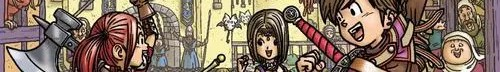
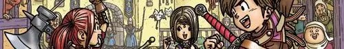

其他介绍
“哑巴”主角
勇者虽然是个话痨，进一个村就会抓着村民说话，但主对话框并不会显示勇者说了什么，据说这样设计是为了增强玩家的代入感。新出的第11部添加了剧情人物语音，只有主角没有cv。
”带着剑“是“这人是勇者”的“必要条件”
勇者一般都喜欢握着（背着）一把小小的剑（除了自己捏主角的那两作，还有印象中五代主角不背，因为他儿子其实才是真正的勇者），但是带着剑的人不一定是勇者，很有可能是城堡的小兵。
从史莱姆开始
不管位于世界何处，当勇者决定开始冒险时，出发地的怪物一定是史莱姆的强度。
因为是勇者，所以可以随便搜刮民脂民膏
主角能随意私闯民宅翻箱倒柜，乱砸缸子，居民们敢怒不敢言。一般到了游戏中期，还会获得一些特殊钥匙，这样即便有安全意识的居民把家锁住也不能阻挡勇者了。
糜夫人快乐井
勇者斗恶龙很多地方都能发现一口井，但这些井跳下去是不会死的，你还能在井里发现一个迷宫，或是一个偷偷居住在这里的人，甚至还在井里修了个房子！
系列经典咒语
荷依米，略微回复hp
鲁拉，瞬间飞向城镇（但不能在有天花板的地方使用，会撞）
美拉，低级火属性魔法
巴基，一般牧师（僧侣）的初级攻击魔法，风属性
利雷米特：瞬间从迷宫脱出（一些剧情杀的迷宫会强制使此咒文失效）
。。。。。。